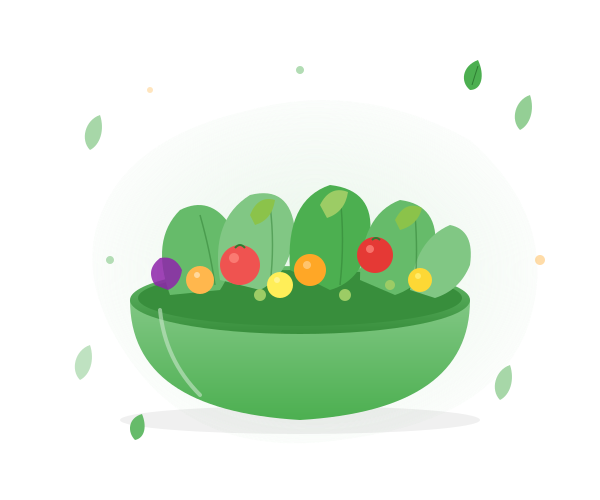

Rejoignez FoodSave pour réduire le gaspillage alimentaire et adopter une alimentation plus saine pour vous et pour la planète.

Tout ce qu'il faut pour mieux manger et moins gaspiller, au quotidien.
Créez et organisez vos listes de courses et vos stocks d'aliments facilement.
Découvrez des recettes adaptées aux ingrédients que vous avez déjà.
Des astuces simples pour réduire le gaspillage chaque jour.
Visualisez vos économies et votre empreinte environnementale positive.
Partagez vos expériences et apprenez des autres utilisateurs.
Contribuez activement à un futur plus durable pour la planète.
FoodSave est une plateforme dédiée à la lutte contre le gaspillage alimentaire. Nous aidons les particuliers et les startups à mieux gérer leurs stocks, à découvrir des recettes créatives et à contribuer à la préservation de l'environnement.
Rejoignez des milliers d'utilisateurs qui font la différence chaque jour pour construire un futur plus sain et plus durable.
Créez votre compte gratuitement et rejoignez la communauté FoodSave.